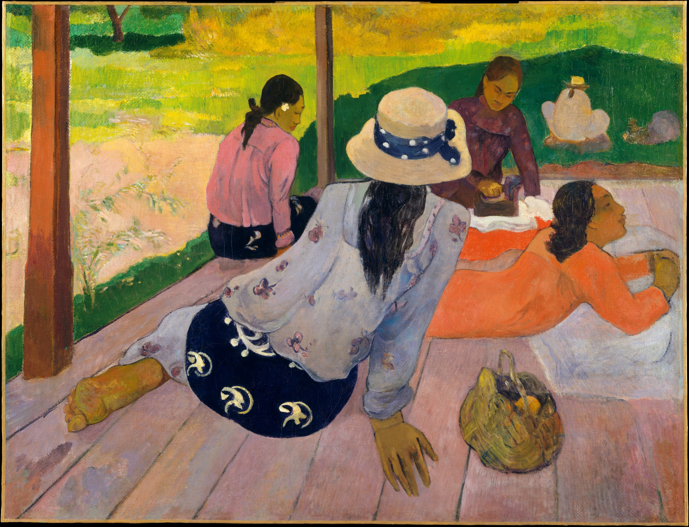

Discovering Gauguin
The Siesta

The unaffected grace and communal ease of Tahitian women impressed Gauguin enormously. The artist worked on this painting over an extended period, incorporating numerous changes. The skirt of the woman in the foreground, for example, was originally bright red; there was a dog in the position now occupied by the basket at lower right; and the woman seated at the left edge of the porch was previously situated further to the left.
commentary from metmuseum.org